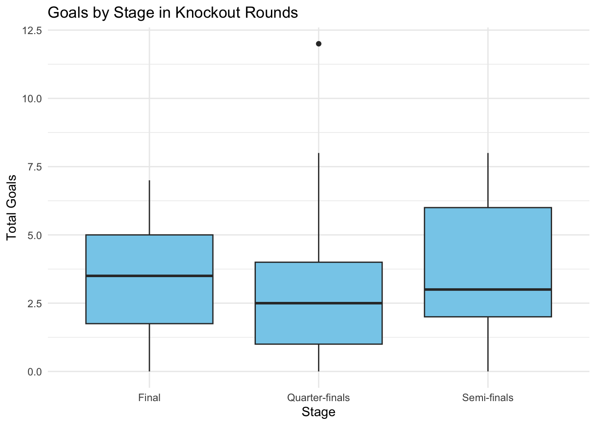

This project explores goal-scoring trends in the FIFA World Cup using historical match data. By analyzing goal distribution across different match stages, decades, and match attendance, we aim to uncover patterns in how competitive intensity, historical shifts, and audience size may influence scoring behavior. The dataset was obtained from Kaggle and includes World Cup matches from 1930 to 2018.
⚽️ Total Goals per Match (All Matches)
worldcup <-read_csv("WorldCupMatches.csv")
Rows: 4572 Columns: 20
── Column specification ────────────────────────────────────────────────────────
Delimiter: ","
chr (12): Datetime, Stage, Stadium, City, Home Team Name, Away Team Name, Wi...
dbl (8): Year, Home Team Goals, Away Team Goals, Attendance, Half-time Home...
ℹ Use `spec()` to retrieve the full column specification for this data.
ℹ Specify the column types or set `show_col_types = FALSE` to quiet this message.
worldcup <- worldcup %>%mutate(Total.Goals =`Home Team Goals`+`Away Team Goals`)summary(worldcup$Total.Goals)
Min. 1st Qu. Median Mean 3rd Qu. Max. NA's
0.000 1.000 3.000 2.833 4.000 12.000 3720
🧠Analysis: The summary shows that the number of goals per match varies widely, with some matches ending scoreless and others having 6+ goals. This reflects both defensive and offensive play styles over the decades.
📈 Average Goals per Match by Year
avg_goals <- worldcup %>%group_by(Year) %>%summarise(Avg.Goals =mean(Total.Goals, na.rm =TRUE))ggplot(avg_goals, aes(x = Year, y = Avg.Goals)) +geom_line(color ="darkgreen", size =1.2) +geom_point(color ="black") +labs(title ="Average Goals per Match by Year", y ="Avg Goals", x ="Year") +theme_minimal()
Warning: Using `size` aesthetic for lines was deprecated in ggplot2 3.4.0.
ℹ Please use `linewidth` instead.
Warning: Removed 1 row containing missing values or values outside the scale range
(`geom_line()`).
Warning: Removed 1 row containing missing values or values outside the scale range
(`geom_point()`).
🧠Analysis: This line chart shows a dip in scoring around the 1990s, which is often attributed to more conservative tactics. Goal scoring has slightly risen in more recent tournaments.
🏟️ Goals by Match Stage (Knockout Rounds Only)
knockout_matches <- worldcup %>%filter(Stage %in%c("Quarter-finals", "Semi-finals", "Final")) %>%mutate(Total.Goals =`Home Team Goals`+`Away Team Goals`)ggplot(knockout_matches, aes(x = Stage, y = Total.Goals)) +geom_boxplot(fill ="skyblue") +labs(title ="Goals by Stage in Knockout Rounds", x ="Stage", y ="Total Goals") +theme_minimal()

🧠Analysis: Final matches tend to have fewer goals, suggesting a more cautious approach due to high stakes. Quarter-finals appear to have more open gameplay with a higher goal range.
👥 Attendance vs Total Goals
worldcup <- worldcup %>%mutate(Attendance =as.numeric(gsub(",", "", Attendance)))# Remove NAsworldcup <- worldcup %>%filter(!is.na(Attendance))ggplot(worldcup, aes(x = Attendance, y = Total.Goals)) +geom_point(alpha =0.6, color ="darkorange") +geom_smooth(method ="lm", se =TRUE, color ="blue") +labs(title ="Attendance vs Goals per Match", x ="Attendance", y ="Total Goals") +theme_minimal()
`geom_smooth()` using formula = 'y ~ x'
🧠Analysis: There is no strong linear trend between attendance and goals, but matches with extremely high attendance often involve more well-known teams or later-stage matches, which might affect play intensity.
🥇 Top Goal-Scoring Teams
team_goals <- worldcup %>%pivot_longer(cols =c(`Home Team Name`, `Away Team Name`),names_to ="TeamType", values_to ="Team") %>%mutate(Goals =if_else(TeamType =="Home Team Name",`Home Team Goals`,`Away Team Goals`)) %>%group_by(Team) %>%summarize(TotalGoals =sum(Goals, na.rm =TRUE)) %>%arrange(desc(TotalGoals))head(team_goals, 10)
# A tibble: 10 × 2
Team TotalGoals
<chr> <dbl>
1 Brazil 225
2 Argentina 133
3 Germany FR 131
4 Italy 128
5 France 108
6 Germany 100
7 Spain 92
8 Netherlands 91
9 Hungary 87
10 Uruguay 80
🧠Analysis: This breakdown highlights the most successful offensive teams in World Cup history. Brazil, Germany, and Argentina typically rank near the top due to their consistent performance and deep tournament runs.
🧾 Summary & Insights
🟢 Goal scoring has fluctuated by era, with defensive trends lowering average goals in the 1990s and modest recovery in modern tournaments.
🟢 Finals tend to be more defensively played, with fewer goals than quarter-finals.
🟢 There is no clear linear relationship between attendance and goals, but high-attendance matches may still indirectly reflect intensity or quality.
🟢 Brazil, Germany, and Argentina are among the most prolific scoring teams in tournament history.
🚀 Future Work
If more detailed data were available (e.g., expected goals (xG), player stats, minute-by-minute data), further analysis could explore: - Goal timing (1st half vs 2nd half vs extra time) - Substitution patterns vs late goals - Impact of star players or tactical formations - Shot conversion rate comparisons by tournament